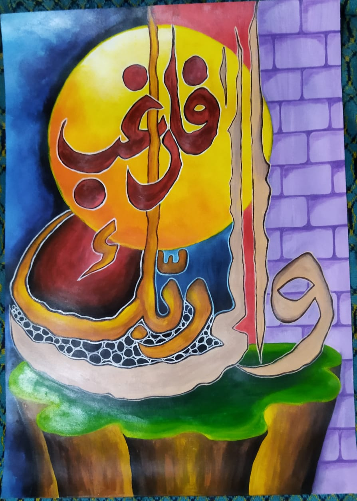 Kaligrafi Kontemporer Kaligrafi kontemporer ini dibuat ketika mengikuti perlombaan kaligrafi di UIN Sunan Hasanuddin Banten pada tahun 2022.
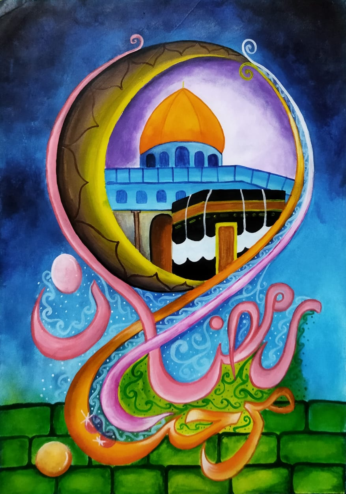 Kaligrafi Kontemporer Karya ini pernah mendapatkan juara 1 dalam Kompetisi Akhwat Challenge 1 yang diselenggarakan Biro Keputrian LDK Syahid Fakultas Ushuluddin pada tahun 2022.
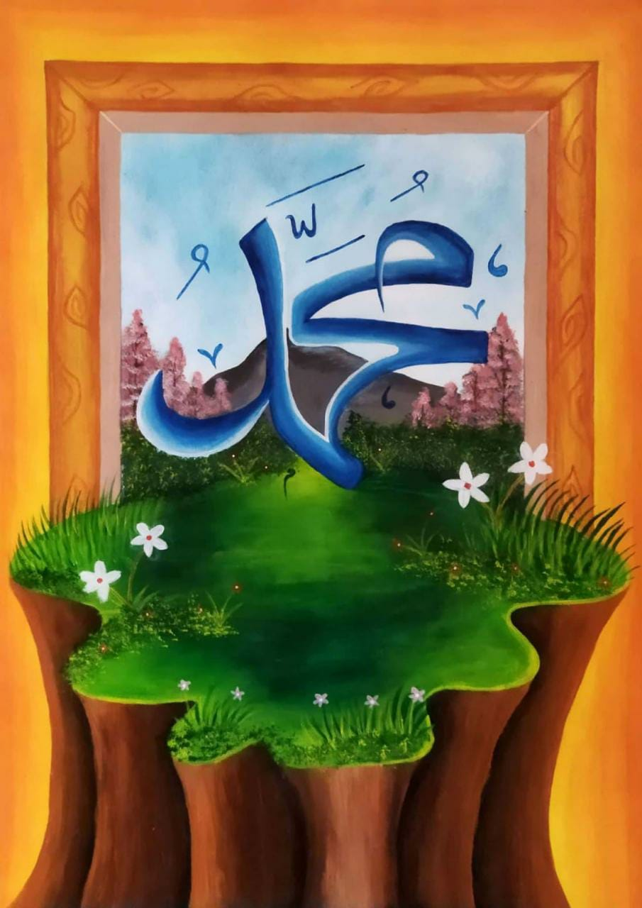 Kaligrafi Kontemporer Kaligrafi ini mendapatkan juara 3 dalam Lomba Kaligarfi kategori umum tingkat Nasional yang diselenggarakan oleh Drawing Kids Project pada tahun 2022.
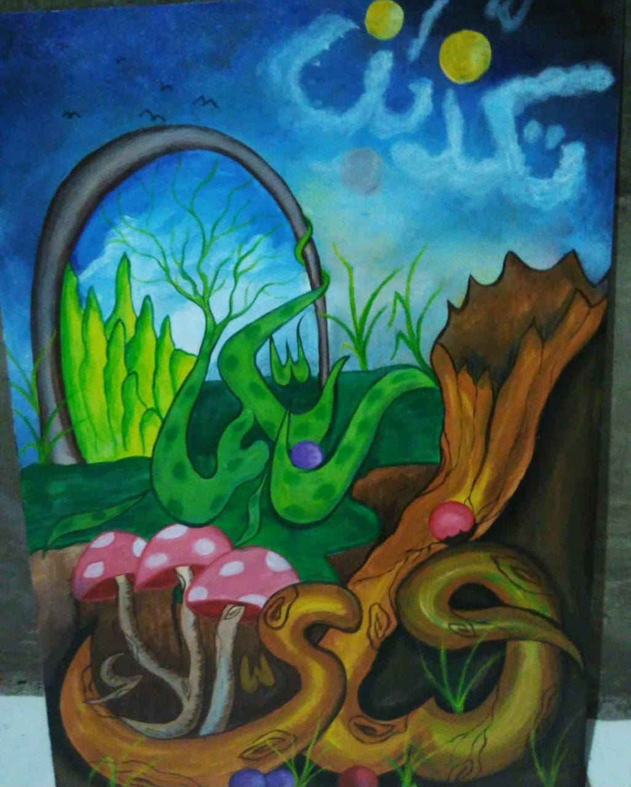 Kaligrafi Kontemporer Kaligrafi kontemporer ini dibuat ketika mengikuti perlombaan di UIN Sunan Maulana Hasanuddin Banten yang diselenggarakan oleh HMJ BKI tahun 2020.
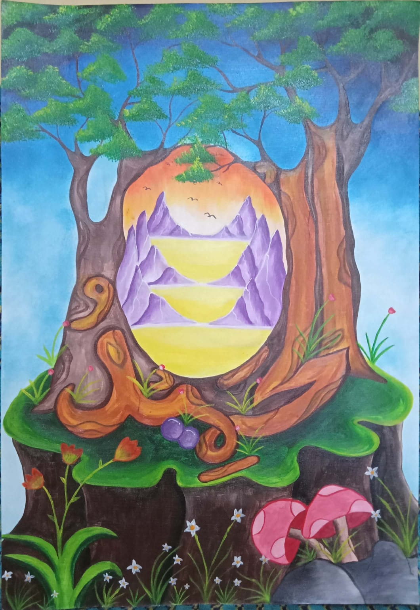 Kaligrafi Kontemporer Kaligrafi ini dibuat ketika mengikuti perlombaan "KALIGRAFI LENTERA 2021" yang diselenggarakan oleh Jipers UIN Syarif Hidayatullah Jakarta.
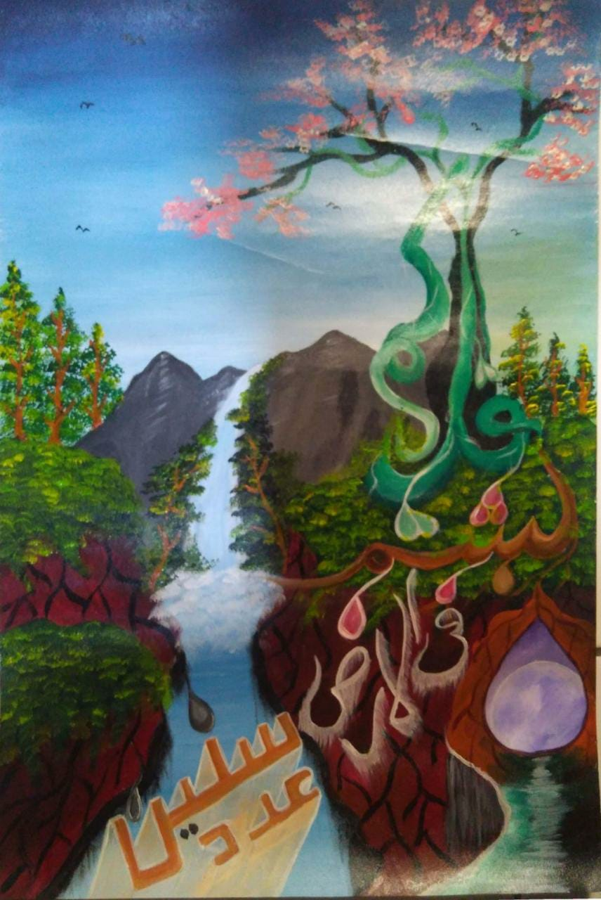 Kaligrafi Kontemporer Karya ini dibuat sebagai bentuk latihan untuk mengikuti acara MTQ (Musabaqoh Tilawatil Al-Qur'an) cabang kaligrafi kontemporer tingkat Kota Cilegon.
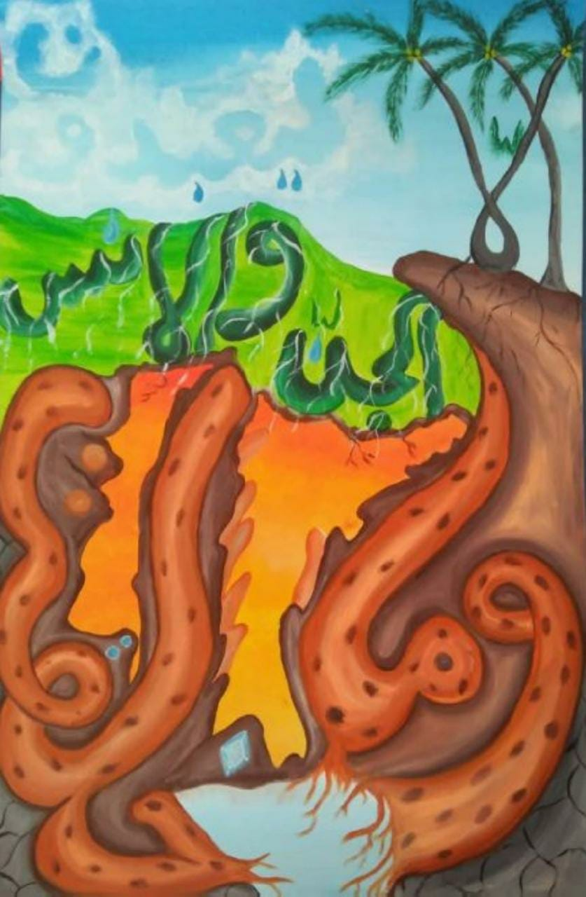 Kaligrafi Kontemporer Kaligrafi ini merupakan hasil karya dalam perlombaan yang diselenggarakan oleh MAN 2 Kota Cilegon dan mendapatkan juara 2.
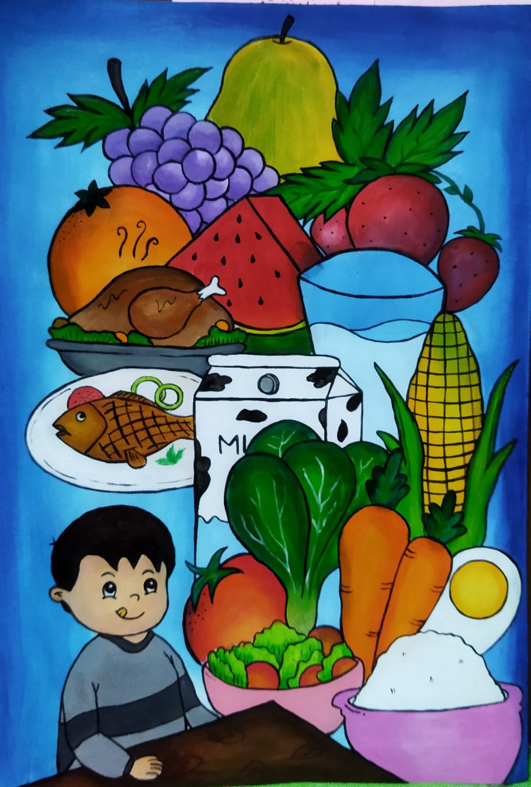 Doodle Art Karya ini pernah mendapatkan Harapan 2 pada Lomba Menggambar tingkat Nasional yang diselenggarakan oleh komunitas Kreativi Seni pada tahun 2022.
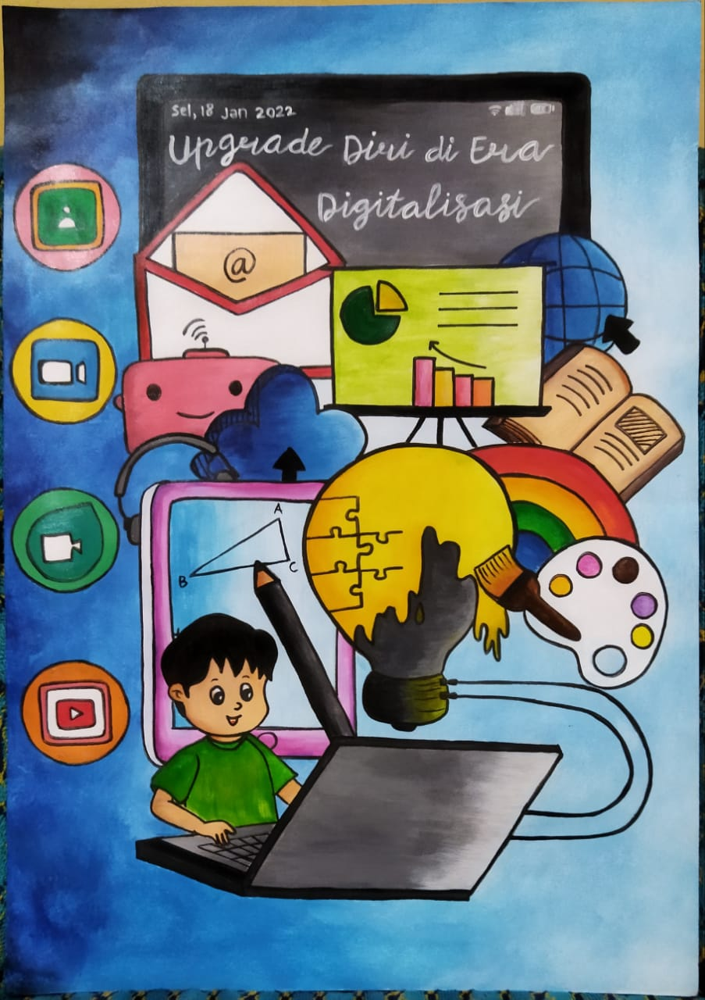 Doodle Art Karya ini dibuat dengan tema "PENDIDIKAN DI ERA DIGITALISASI" yang diselenggarakan oleh Universitas Diponegoro. Tapi, karya ini belum mendapatkan hasil yang terbaik.
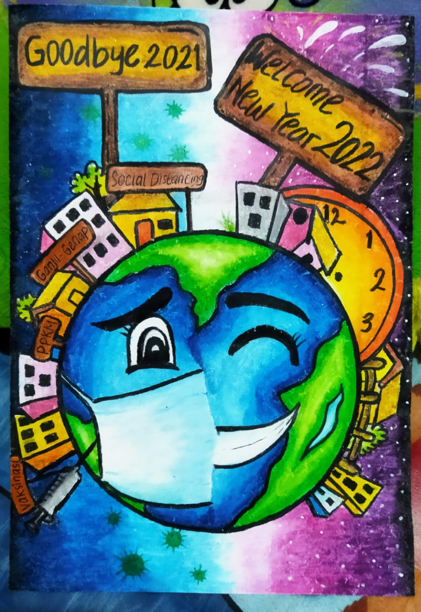 Doodle Art Masih dengan doodle art, karya ini dibuat ketika mengikuti lomba menggambar secara online dengan tema "HAPPY NEW YEAR" yang diselenggarakan oleh Rumah Sastra dan Seni (RUSANI) pada tahun 2022.
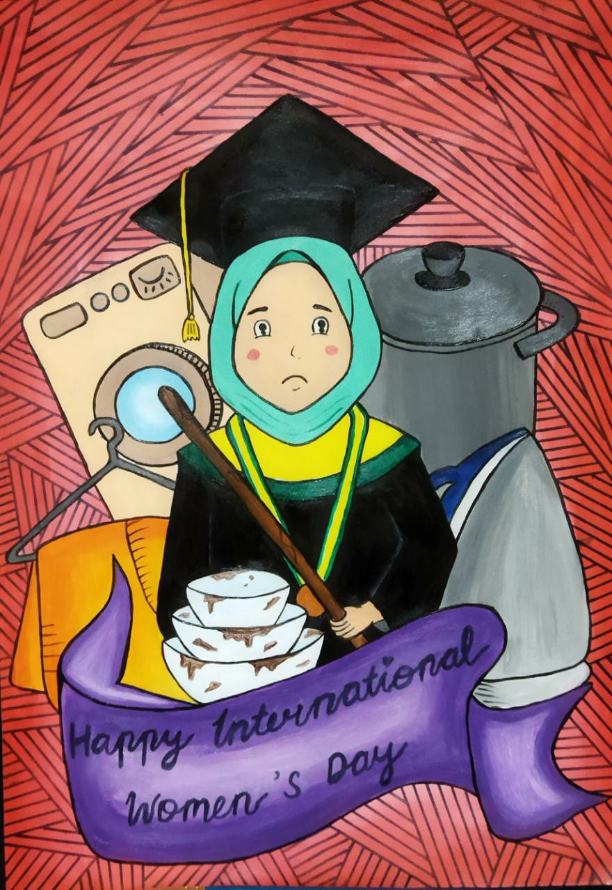 Doodle Art Karya ini dibuat untuk mengikuti lomba menggambar dalam rangka Hari Wanita Sedunia yang diselenggarakan oleh komunitas Joyfulnimba pada tahun 2022.
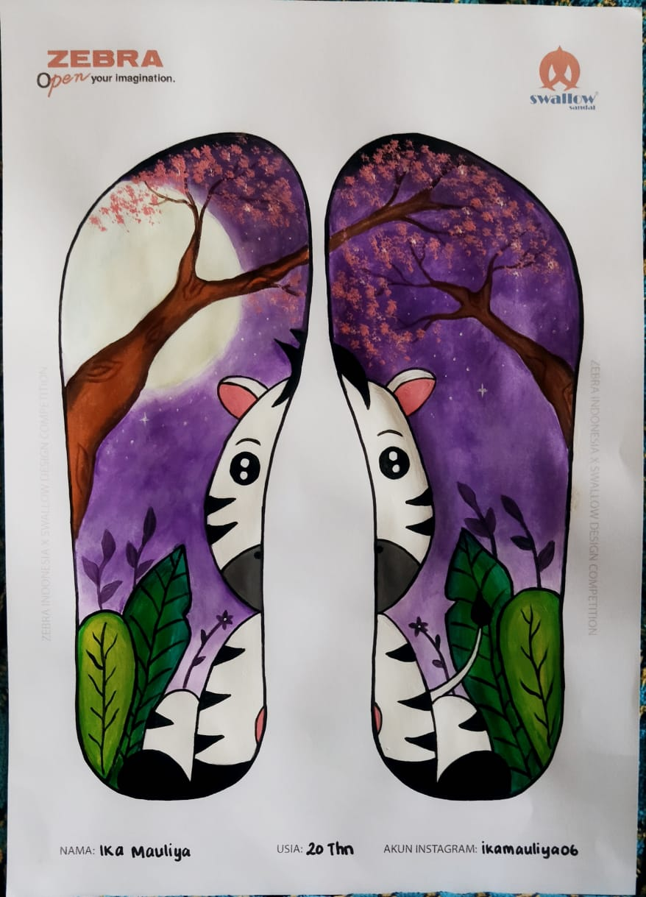 Doodle Art Karya ini dibuat untuk mengikuti kompetisi online yang diselenggarakan oleh ZEBRA Indonesia dan berkolaborasi dengan Sandal Swallow Indonesia pada tahun 2022.